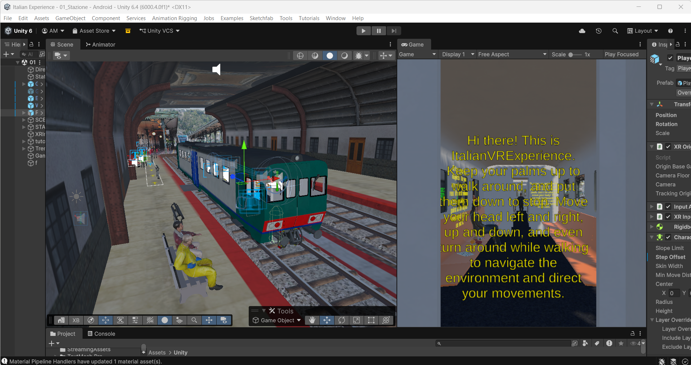
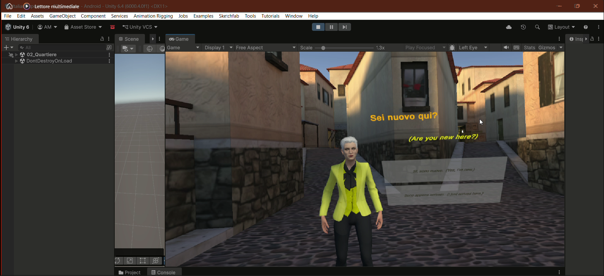
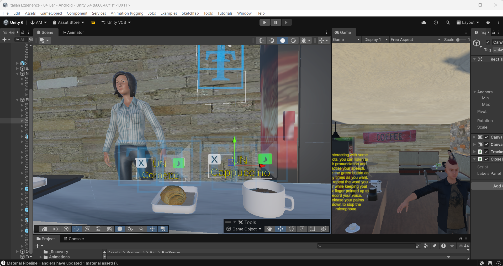
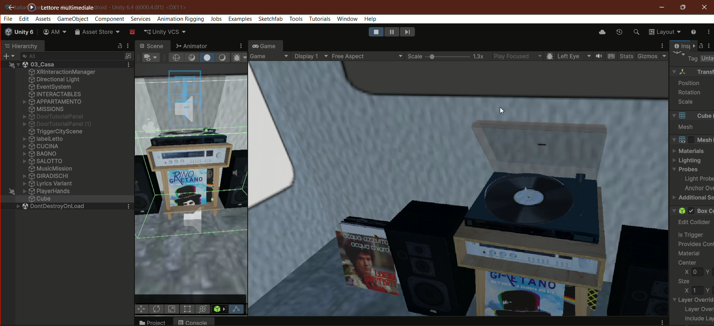

Selected work from my Master’s degree in Digital Humanities: thesis, internship and course projects.
ItalianVRExperience: an immersive VR experience for situated acquisition of Italian as a second language
Master's thesis in Digital Humanities (supervisor Prof. Marcello Carrozzino, co-supervisor Prof. Mirko Tavosanis). A VR prototype for adult English speakers with no prior knowledge of Italian. The player arrives at the imaginary town of Bellavalle and has to use Italian to get around: the language is never the subject of an exercise, it is the tool for solving real situations. The syllabus is a survival A1 repertoire built from the Profilo della lingua italiana, with the focus on spoken production.
Implementation took place as a visiting student at the Institute of Mechanical Intelligence, Scuola Superiore Sant'Anna, Pisa.

01 STATIONOnboarding on the train. Hand your ticket to the inspector, physically.
02 NEIGHBOURHOODSpeak to Lina, the neighbour. Name capture by voice, subtitles on.
03 BAROrder at the counter with plausible distractors, no translation, listen-and-repeat labels.
04 HOMEFree exploration of descriptive vocabulary, plus a record player with an animated song transcription.What I built
- Controller-free interaction with hand tracking (XR Hands): custom gestures for locomotion, grabbing, pinch selection, inventory and push-to-talk
- Fully local speech recognition with Whisper (ggml-small), tolerant text matching and a turn-taking sound cue
- Grammar and vocabulary tutor driven by a local LLM (Ollama/Mistral) used only for intent extraction, with answers coming from hand-verified databases to rule out hallucinations
- Dialogue system with NPC trees, an event bus, persistent game state and an automatic behavioural logger (CSV)
- Environments assembled from Asset Store and Sketchfab models, with Blender fixes, Mixamo animations and ElevenLabs voices
GAMEPLAY | 29 SECONDS
User study (15 English-speaking absolute beginners, one 30 minute session, post-test only design, exploratory results):
- The best remembered formulas are the ones tied to a physical or situated action, such as handing over the ticket
- Whisper keeps the dialogue going but cannot replace a human ear for pronunciation: the non-rhotic /r/ is often silently normalised to the Italian spelling
- Behavioural logs complement the post-test instead of replacing it, because they measure speaking while the post-test measures recognition
Virtual environments: coursework and implementation
Development of interactive 3D environments for the Virtual Environments course (grade 28/30), which laid the technical groundwork later applied to the thesis (see 00).
- Building 3D scenes and managing user interaction in Unity
- C# scripting for game logic and environment interaction
- Direct application to the VR language-learning game, from scene design to hand tracking
Digital pantry manager: Python OOP & GUI
Two assignments for the Programming and Data Analysis course (grade 27/30), evolving from a procedural implementation into a fully object-oriented system with a graphical interface.
- Assignment 2: procedural pantry management: creating, adding, and removing ingredients, calorie and cost calculation, file read/write, with automated tests and explicit exception handling (
TypeError,ValueError,KeyError) - Assignment 3: refactored into classes (
Dispensa,Ingrediente,Ricetta) with dunder methods (__eq__,__str__,__add__) and a Tkinter GUI for interactive ingredient and recipe management
def __add__(self, altroingredientequant):
if type(altroingredientequant) is not IngredienteQuantita:
raise TypeError("the ingredient is not of the correct type")
...
return self
Course content design: DETAILLs Living Lab
150-hour internship (Mar to Jul 2025) at the DETAILLs Living Lab, University of Pisa, an Erasmus+ project (DEsign Tools of Artificial Intelligence in Sustainability Living LabS) building curriculum and training materials on AI-driven sustainable design, under the supervision of Prof. Filippo Chiarello.
Beyond the literature review and seminar work, the core deliverable was building actual course content for what has since become a university-level course: video lectures, infographics, interactive elements, and interactive maps built in Tableau, the same tool later applied to the data journalism project below.
- Researched and structured pedagogical content on serious games, AI, and sustainable design for the course Artificial Intelligence for Sustainability (Università di Pisa), combining literature review (top-down/bottom-up approaches) with tools including Moodle, GitHub, Tableau, and Scimago
- Produced video lectures and infographics translating technical AI/sustainability concepts into accessible course material
- Built interactive Tableau maps and elements integrated into the course's e-learning platform
- Took part in weekly lab seminars with project partners across the DETAILLs consortium (Pisa, Zagreb, Salamanca)
PD&M Desirability & Feasibility Report
Duo project for Project Design and Management for Data Science with M. Radojicic, tackling the visibility problem faced by emerging musicians in a $26B global market, structured across a full Desirability and Feasibility cycle.
- User research: brainstorming, role-storming, 5 Whys root-cause analysis, interviews, a 10-question survey
- Five user personas mapped via empathy maps (vinyl collectors, songwriters, emerging musicians, independent label owners, hidden-gem seekers), evaluated with SWOT analysis and Maslow's hierarchy
- Need prioritisation via a number/importance/confidence scoring matrix across all five user groups
- Feasibility phase: technology ideation (How-Now-Wow-Huh?-Ciao matrix, fishbone diagram, Google Trends and dataset analysis), narrowed to three candidate solutions
- Validated solutions through real pretotyping: A/B testing physical vs. digital concert postcards, user feedback collection, assessed with the Fogg Behaviour Model and an Ishikawa 5M analysis
- Final solution (digital concert postcards with QR-linked content) selected via Pickcharts and NUF Test scoring as the highest-payoff, lowest-difficulty option
Unveiling the Complexities of Artificial Intelligence
A critical essay on the structural limits of AI systems in making ethical and moral decisions. The argument moves through DARPA's three "waves" of AI, the problem of opaque "black box" systems, and a review of documented cases of algorithmic bias in gender classification and language models.
- Analysis of bias sources across the algorithmic chain (training data, algorithmic focus, output)
- Critical discussion of AI anthropomorphisation and "ethics washing" narratives in the tech industry
- Extensive academic bibliography (Hinton & Salakhutdinov, Scharre et al., DARPA, JSTOR sources)
Relevant to research contexts involving behavioural modelling and explainable AI (XAI).
Oggi a tavola, dieta mediterranea
Data journalism project built with G. Fidone (Data analysis) and V.Galli (Graphics). Development, research and writing of a multimedia article critically dismantling the myth of the Mediterranean diet as an automatically healthy model, grounded in IHME data on dietary risk factors in Italy.
- Interactive Tableau dashboards embedded directly in the page
- Original interview with a nutrition expert
- Historical framing (Ancel Keys, 1950s) and critique of national marketing narratives
Semi-automatic evaluation of machine translation systems
Report for the Italian Linguistics course (Prof. Mirko Tavosanis) comparing Google Translate, DeepL, and ChatGPT-4 on a Russian-to-Italian translation of an institutional news text, combining automatic metrics (BLEU, F-Measure, TER) with a three-dimension qualitative scoring grid.
- Blind evaluation conducted independently on anonymised translations, to reduce cognitive bias
- Scoring grid covering semantic fidelity, register/genre adequacy, and formal correctness
- Result: ChatGPT-4 most natural stylistically, DeepL most balanced terminologically, Google Translate penalised by literal calques
Skills & certifications
PROGRAMMING
- Python (procedural & OOP)
- C# (Unity)
- JavaScript
- HTML / CSS
XR & TOOLS
- Unity 6 / XR Hands / OpenXR
- Blenderintermediate
- Whisper & Ollama (local AI)
- Tableau
- Adobe Creative Suite
- Microsoft Office
RESEARCH
- Design-Based Research
- User studies (SUS, presence)
- Perceptual evaluation of ASR
- Google Analytics
CERTIFICATIONS
- BACHELOR DEGREE Foreign Languages and Literatures2021
- MASTER DEGREE Digital Humanities2026
- Google Ads Search2023
- Google Ads Measurement2023
Certifications reflect skills acquired through coursework in Technologies for Web Marketing; both have since lapsed and are listed for completeness, not as current credentials.
LANGUAGES
- Italiannative
- EnglishC1
- RussianB2
- FrenchA2
- Dutchbeginner